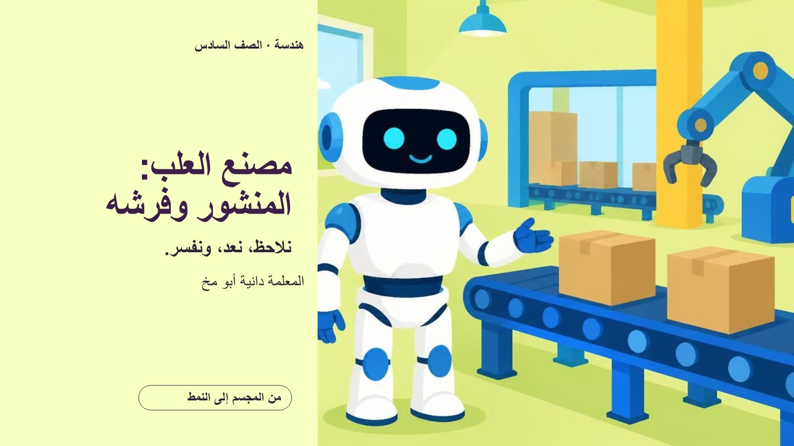
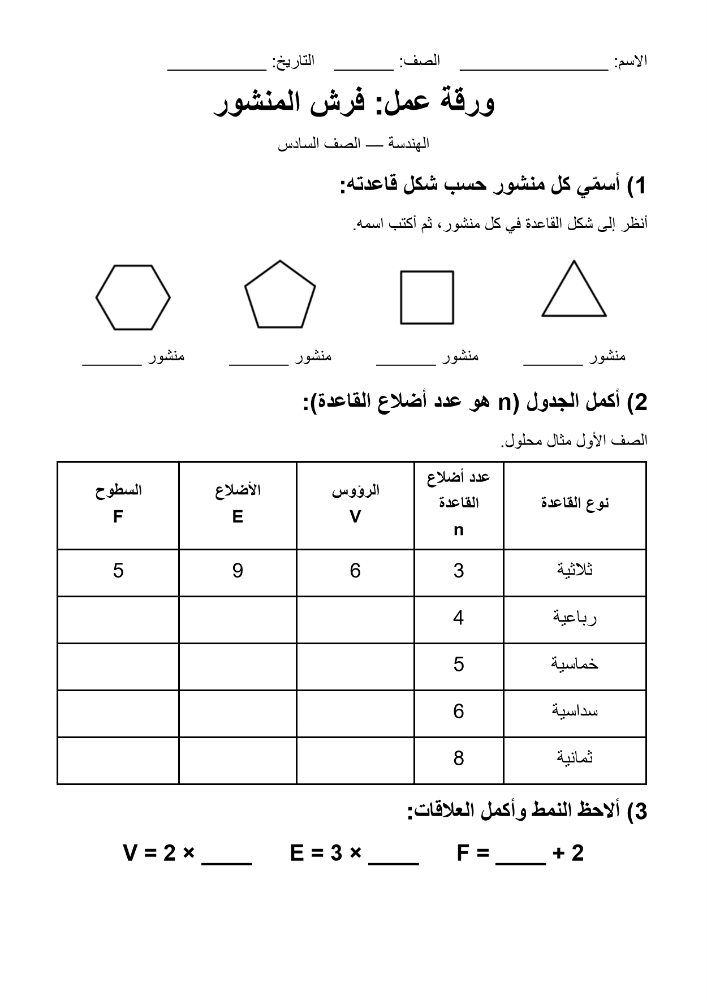
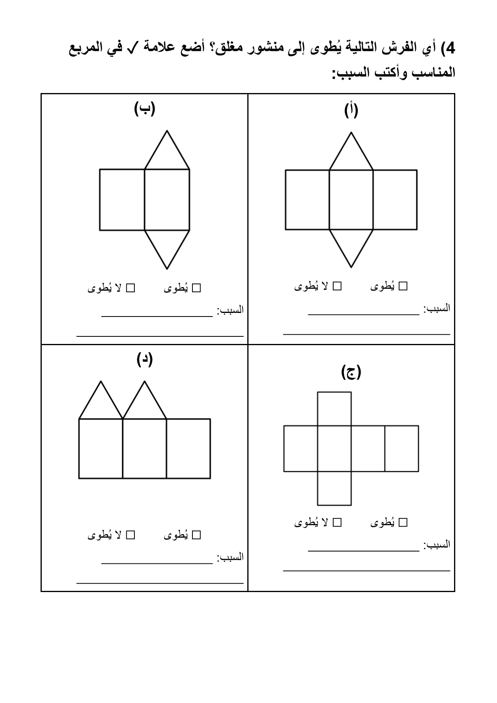
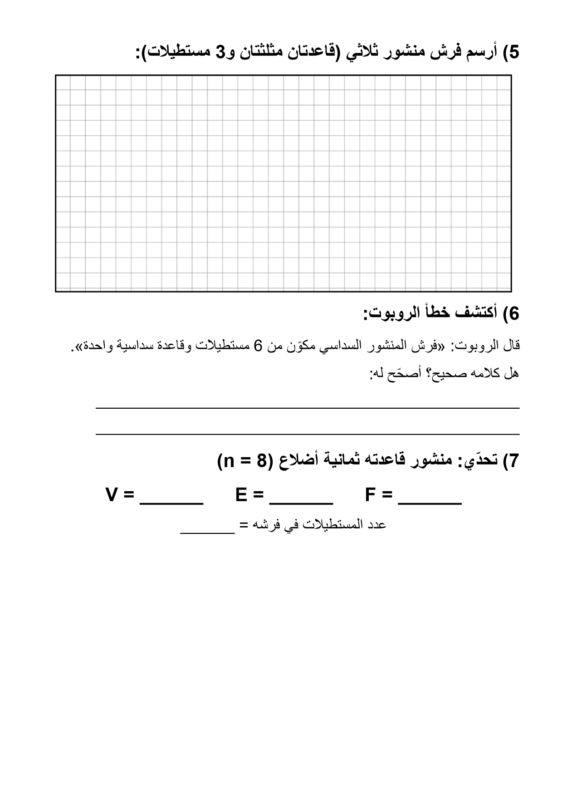

من المجسم إلى النمط: نلاحظ، نعدّ، ونفسّر مع روبوت المصنع.
تنقّلي بالأزرار أو بالأسهم (⟵ التالي، ⟶ السابق)، أو افتحيها بملء الشاشة للعرض في الصف.

ثلاث صفحات بالأبيض والأسود وخط كبير: تسمية المنشور، جدول الرؤوس والأضلاع والسطوح، اختبار الفرش، رسم فرش، واكتشاف خطأ الروبوت.



15 شريحة قابلة للتعديل، مع ملاحظات المعلمة
ثلاث صفحات A4 بالأبيض والأسود وخط كبير
لتغيير الأعداد أو الأشكال
نسخة المعلمة: صفحتان بالحلول والتعليل
قابلة للتعديل